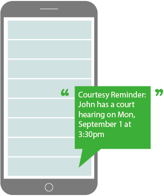

Just text your case number to:
575-222-8484
The court will text you back. Reply YES to confirm, and you will get a reminder the afternoon before each hearing with the hearing type, date, time, location, and a link to the details.
Case numbers look like: 3AN-26-01234CI.
Who can sign up?
Anyone. You do not have to be a party or a lawyer in the case, and you can sign up for as many cases as you like.
How do I stop reminders for one case?
Text the case number to 575-222-8484. The court will reply that you are already subscribed. Reply "DELETE" and reminders for that case will stop. Other cases you follow are not affected.
How do I stop all hearing reminders?
Text "STOP" to 575-222-8484. To start again later, text "START" to 575-222-8484.
I signed up but I am not getting texts. Why?
If you ever texted "STOP" to 34852, the court cannot text you at all. Text "START" to 34852 to allow texts from the court again.
Do I still need to verify my court date?
Yes! Reminders are a courtesy service and court dates change frequently. Always verify the date and time of your hearing on CourtView or by contacting your local court.
I signed up with the old CourtBot number. What happens to my reminders?
CourtBot is no longer accepting new sign-ups. If you texted 907-312-2700 in the past, reply "STOP" to that number to end those reminders, then sign up with the court at 575-222-8484. The original CourtBot page is archived here.
Who made Alaska CourtBot?
Alaska CourtBot was built and maintained by volunteers at Code for Anchorage, a brigade of Code for America, until the Alaska Court System launched its own reminder service. If you would like to be involved with projects like this, please visit: Code for Anchorage.